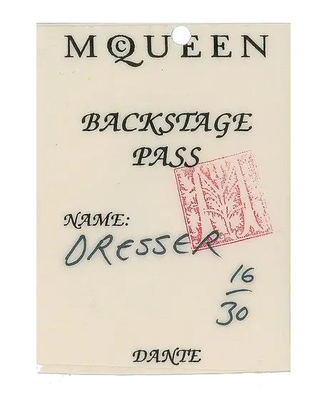

Instruction: The VR installation is approximately 200 MB, so please be patient during the loading process.
To activate voices and other surprises, point the mask at the objects for at least 5 seconds.
Yes and no. All the voices you hear are AI-generated voice clones, created using advanced technology and audio samples meticulously extracted and refined from publicly available interviews online. The scripts have been thoughtfully crafted and edited by AI, grounded in extensive research and exploration of the questions: Is fashion art?
The installation merges various technologies and genres, spanning AI, Virtual Reality, 3D Modelling, Video Art, Audio and Video Editing, Music Composing, Photo Collage, Moving Images Arts, Net Art, Code Art, Scripting, Web Design and even Site Hacking.
From concept to completion, we worked for about a month to create a responsive experience across all major browsers on Smartphone, Tablet, and Desktop. Our show is not only an example of how AI can be integrated into artistically and sociologically driven mixed-media projects, but it also aims to explore the deeper meaning of Fashion versus Art, vice versa and return. We hope you enjoy the installation and discover something inspiring. It was a true pleasure to bring personalities like Alexander McQueen and David Bowie back to life, and this project might also be seen as a small step toward a digital legacy for everyone.
Made with ♥ by ARTOLDO